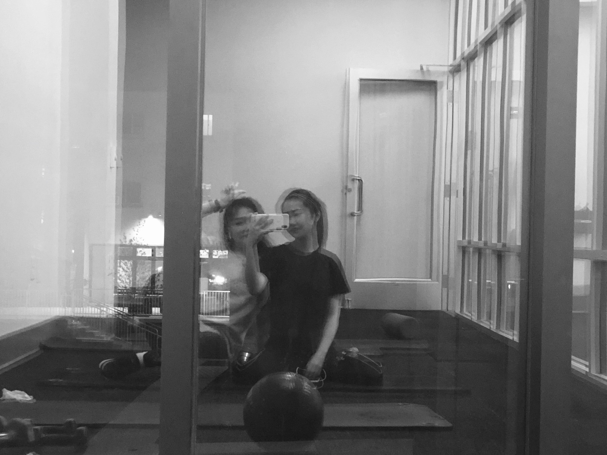

Some basics about me
Life
I was born and raised in Shanghai, China, the place I spent my first 18 years. I then took on my journey of studying aboard, entered CMU to study CS, and began my college life in Pittsburgh, PA.

Hobbies
I’m a novice photographer. I bought an Canon EOS M50 in 2019. The following are the first several photos I took via my camera.


I read books in my spare time. Authors that I like
- Keigo Higashino, 東野圭吾
- Xun Lu, 鲁迅
- Eileen Chang, 张爱玲
I listen to music during work, study, almost at all times. Singer I like
- Charlie Puth
- Aimer, エメ
- Aimyon, あいみょん
- Jay Chou